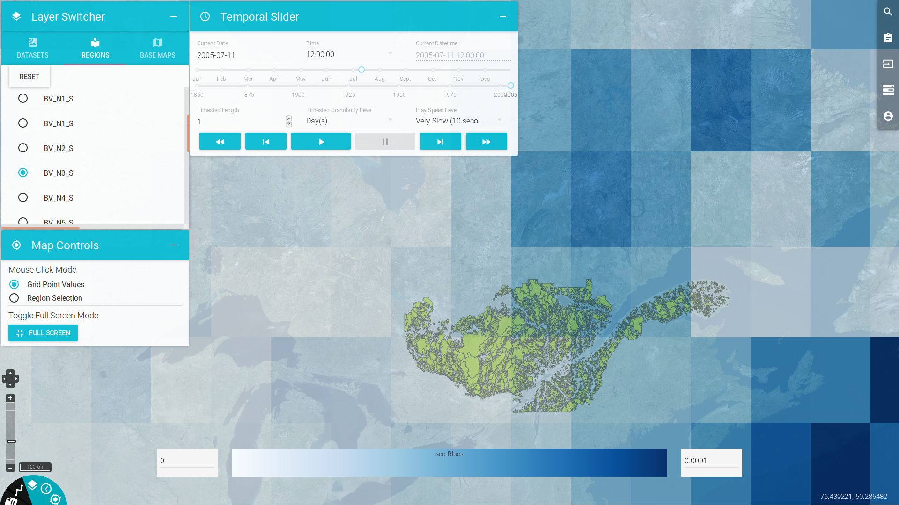

Frontend¶
The PAVICS-frontend (GitHub Repository) is the custom graphical interface for users to leverage the services offered by the platform. It provides a map interface to display both gridded climate data and geospatial layers, launch services and workflows and monitor the progress and status of user’s jobs. It also provides limited capacity to dynamically interact with datasets. Users can create projects that store datasets, workflows and outputs for future use.
The frontend is written with the React.js library and interacts with the backend through API calls to REST and WPS services.
Gridded data rendering¶
A core component of the frontend is the gridded data renderer. Gridded netCDF datasets selected for visualization are displayed on the base map using `ncWMS`_, a server capable of converting multidimensional netCDF data into images. The frontend sends GetMap requests to the ncWMS server according to the display’s bounding box and zoom level. These requests are handled by OpenLayer and its plugins.
The conversion from the raw netCDF data to an image requires a mapping between data values and a colorbar. The color scale can be selected from a menu and its min and max values modified by the user. The color scale information is sent to ncWMS to render the data into an image.
The colorbar palette is displayed as an image, provided as the response to a GetLegendGraphic request to ncWMS.
For high resolution data, rendering suffers from lag that can make browsing netCDF files a frustrating experience. We are investigating options to reduce delivery latency.
Take a look at the frontend tutorial for information on the frontend’s usage!
Todo
Describe the relationship between the frontend and Phoenix.